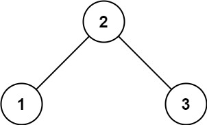
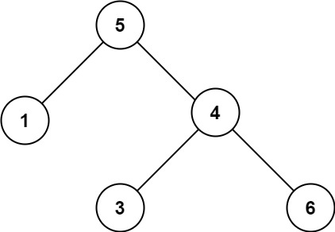

题面
给你一个二叉树的根节点 root ，判断其是否是一个有效的二叉搜索树。
有效 二叉搜索树定义如下：
- 节点的左子树只包含 严格小于 当前节点的数。
- 节点的右子树只包含 严格大于 当前节点的数。
- 所有左子树和右子树自身必须也是二叉搜索树。
示例 1：

输入： root = [2,1,3]
输出： true示例 2：

输入： root = [5,1,4,null,null,3,6]
输出： false
解释： 根节点的值是 5 ，但是右子节点的值是 4 。提示：
- 树中节点数目范围在
[1, 104]内 -231 <= Node.val <= 231 - 1
思路
- 和上一题（108. 有序数组转 BST）正好是互逆操作：
- 108：有序数组 → 构建 BST（已知有序，造树）
- 98（本题）：BST → 验证是否合法（已知树，检查是否有序）
解法一 递归传递上下界
- 每个节点的值必须在
(low, high)范围内： - 往左走：上界变成当前值（左子树所有节点 < 当前值）
- 往右走：下界变成当前值（右子树所有节点 > 当前值）
- 初始调用传
(-inf, inf)，表示根节点没有范围限制 - 和对称二叉树类似——都是递归时传额外信息给子树去判断
- 易错点：
- 空节点返回 `True` 不是 `None`：空节点是合法的 BST，返回 None 会导致上一层
l_flag and r_flag出错 - 参数名不要用 `left`/`right`：容易和
root.left/root.right搞混，用low/high更清晰 - 是严格小于/大于：条件是
value <= low or value >= high（等于也不行），不是<和>
代码实现
class Solution:
def isValidBST(self, root: Optional[TreeNode], low=-inf, high=inf) -> bool:
if not root:
return True
value = root.val
if value <= low or value >= high:
return False
l_flag = self.isValidBST(root.left, low, value)
r_flag = self.isValidBST(root.right, value, high)
return l_flag and r_flag- 复杂度：时间 O(n)，空间 O(n)（递归调用栈）
解法二 中序遍历
思路
- BST 的中序遍历结果一定是严格递增的。本质就是：上一题（108）的前提（有序数组）就是本题要验证的东西（中序遍历是否有序）
- 回忆中序遍历的递归结构，只需要把"收集值"换成"和上一个值比较"：
# 中序遍历：不会失败，不需要判断
dfs(node.left) # 直接调，不管返回值
ans.append(node.val)
dfs(node.right)
# BST 验证：可能失败，必须判断
if not dfs(node.left): # 左边不合法？提前终止
return False
if node.val <= self.pre: # 当前节点不合法？提前终止
return False
self.pre = node.val # 更新上一个值
return dfs(node.right) # 右边的结果就是最终结果- 为什么递归调用要检查返回值，中序遍历不需要？ 中序遍历只管收集值，不可能"失败"。BST 验证可能在左子树就发现不合法，需要提前终止——如果不检查，即使左子树已经违规，代码还会继续检查后面的，浪费且可能覆盖正确结果。和对称二叉树一样：返回布尔值的递归都需要检查子调用的结果
- 为什么用内部 `dfs` 函数而不是直接自己调自己？ 因为需要在入口处初始化
self.pre = -inf，如果直接自己调自己，每次递归调用都会重置self.pre，状态就乱了 - 易错点：
- `value <= self.pre` 不是 `value < self.pre`：BST 要求严格大于，等于也不合法
- 空节点返回 `True`：空树是合法 BST
代码实现
class Solution:
def isValidBST(self, root: Optional[TreeNode]) -> bool:
self.pre = -inf
def dfs(node: Optional[TreeNode]):
if not node:
return True
if not dfs(node.left):
return False
value = node.val
if value <= self.pre:
return False
self.pre = value
return dfs(node.right)
return dfs(root)- 复杂度：时间 O(n)，空间 O(n)（递归调用栈）
另一种写法 不定义 dfs 直接自己调自己
class Solution:
pre = -inf # 类变量，不是实例变量
def isValidBST(self, root: Optional[TreeNode]) -> bool:
if root is None:
return True
if not self.isValidBST(root.left):
return False
if root.val <= self.pre:
return False
self.pre = root.val
return self.isValidBST(root.right)- 关键区别：
pre = -inf写在类体里（class Solution:下面、方法外面），而不是在方法内部。这样self.pre在整个递归过程中是同一个变量，不会每次调用都重置 - 如果写在
isValidBST方法内部（self.pre = -inf），每次递归调用都会重新执行这行，把pre重置为-inf，判断就全乱了 - 对比前一种写法：用内部
dfs函数的好处是初始化代码写在入口处更直观，但这种类变量写法更简洁